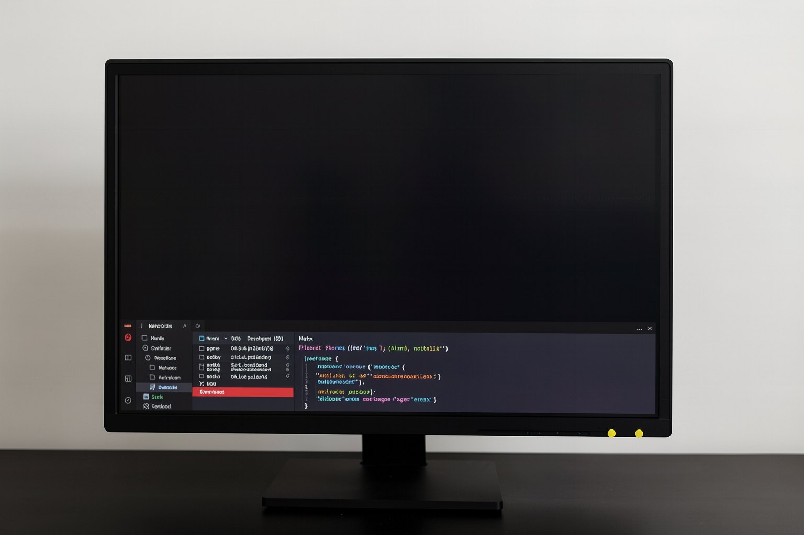
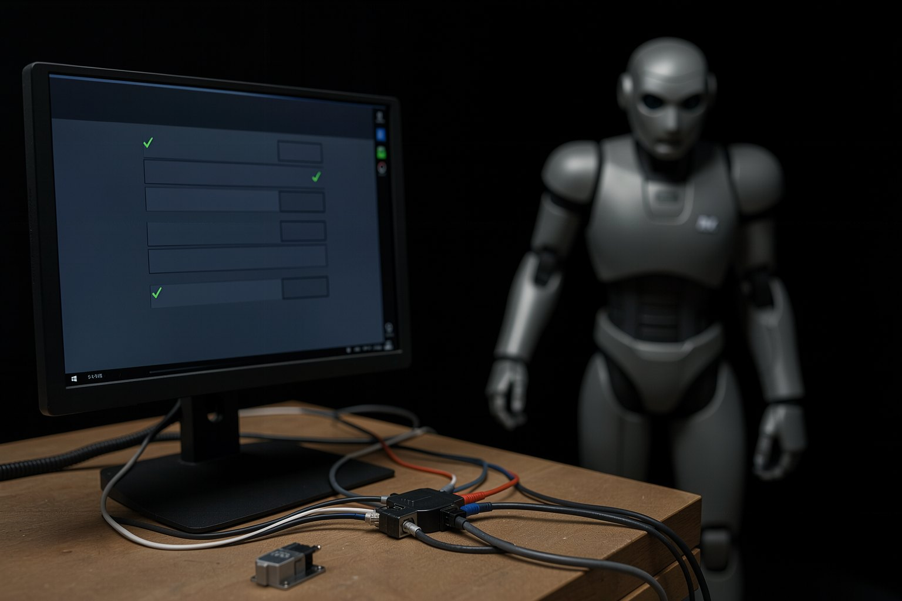

WebMCP Program · course 3 of 6 · 8 lessons
Browser agents: test your site the way the agent sees it
Playwright MCP, Chrome DevTools MCP, and the agent side that consumes WebMCP, all running against a local page. You write the contract for each task, see where the screen fails, and walk away with a battery that an agent runs against your site and saves to a file.
- 8lessons
- 19exercises with expected output
- 2browser MCP servers tested
- 1optional step with your agent
The lessons
From the agent map to your site's battery: Playwright MCP, DevTools MCP, the side that consumes WebMCP, the contract, the test in a file, where the screen fails, and the battery.
 Lesson 1 · 15 minThe Oct 2026 map: computer use, extensions, browsers with an agent, and dev toolsBrowser agent has become several different things: a model that looks at the screen, an extension in your Chrome, a whole browser with an agent inside, and tools that give a browser to Claude Code or Codex. In this lesson you separate the four families, read each one's status with a date, and get the course kit ready.
Lesson 1 · 15 minThe Oct 2026 map: computer use, extensions, browsers with an agent, and dev toolsBrowser agent has become several different things: a model that looks at the screen, an extension in your Chrome, a whole browser with an agent inside, and tools that give a browser to Claude Code or Codex. In this lesson you separate the four families, read each one's status with a date, and get the course kit ready.- Lesson 2 · 20 minPlaywright MCP in Claude Code/Codex: the accessibility snapshot in practicePlaywright MCP gives your coding agent a browser. It doesn't send a screenshot: it sends the accessibility snapshot, with a reference (ref) on each control, and the agent acts through those refs. In this lesson a script makes exactly the calls the agent would make, without a model, and then you connect the server to Claude Code or Codex.

Lesson 3 · 15 minChrome DevTools MCP: see what the agent did (console, network)When the agent says "I couldn't do it," the answer is usually in the console or the network: a file that returned 404, a JavaScript error. Chrome DevTools MCP gives the agent the same tabs you open with F12. In this lesson you list the console and the network of the kit page, find the planted error, and bring it to zero. Lesson 4 · 20 minThe agent that consumes WebMCP: discovery, execution, exposedTo, and originCourse 2 teaches the page to register tools. Here you stand on the other side: the agent. Playwright MCP 0.0.83 already turns the page's WebMCP tools into its own tools, with the annotations and an "untrusted" warning. You see the discovery, the call, the path without the API, and who sees what across origins. Experimental as of 10/19/2026.
Lesson 4 · 20 minThe agent that consumes WebMCP: discovery, execution, exposedTo, and originCourse 2 teaches the page to register tools. Here you stand on the other side: the agent. Playwright MCP 0.0.83 already turns the page's WebMCP tools into its own tools, with the annotations and an "untrusted" warning. You see the discovery, the call, the path without the API, and who sees what across origins. Experimental as of 10/19/2026.- Lesson 5 · 15 minTask contract for a browser agent (goal, limits, proof, stop)"Book a service for me on the site" sounds like a request. For a browser agent, everything is missing: which page, what it can touch, how to prove it is done, and when to stop. In this lesson you write a task contract in four parts and check with a script that the contract is complete before handing it to any agent.
- Lesson 6 · 20 minAn agent tests your site: tasks with criteria and results saved to a fileA test that only exists in the conversation with the agent disappears when the conversation ends. Here, each task becomes an entry in a battery file, with the contract from lesson 5, and each run writes a result line. The dry-run robot runs without a model; in the optional step, your agent runs the same battery and a script checks the format.
- Lesson 7 · 15 minWhere the screen fails (login, captcha, dynamic content) and when the human takes overSome screens the agent should not go past: login, human verification, and the button that confirms an action. And there is one where it makes mistakes without noticing: content that arrives later. In this lesson, the limits task battery runs through these four cases on the kit's site, and you watch the agent stop with the exact reason instead of making things up.

Lesson 8 · 20 minThe task battery for your site (map + generator)Time to put it together: the tasks that matter on your site, each with a contract, steps, and what to expect, in a battery that the dry-run robot runs on every change and that your agent can run whenever you want. conferir-bateria.mjs tells you if it is ready; the map and the generator organize what is missing.
Who it's for
- 1Web devs or QA who edit HTML and JavaScript and run commands in the terminal.
- 2Anyone who wants to know whether a browser agent can use their own site, before a customer finds out.
- 3Anyone who has already done course 0 (or knows how to read the accessibility tree) and wants to test for real.
What you'll be able to do
- 1Connect Playwright MCP and Chrome DevTools MCP to Claude Code or Codex and see what they see.
- 2See how an agent discovers and calls a page's WebMCP tools, and what happens without the API.
- 3Write a task contract: goal, limits, proof, and stop.
- 4Run a battery of tasks against your site, with the result in a file and the agent stopping where it should.
Where this course fits in the WebMCP Program
- 1This is course 3. Suggested order: 0 → 1 → 2 → 3 → 4 → 5.
- 2Before: 0 · basics, 1 · MCP server, 2 · WebMCP on the page. After: 4 · security, 5 · expert.
- 3Before you start: Node 20.19 or newer, git, and a Linux or macOS terminal (WSL on Windows). Claude Code or Codex only for the optional step in lesson 6.
- 4The kit, the example site, and the script messages are in Portuguese in all versions of the course; the commands are the same.